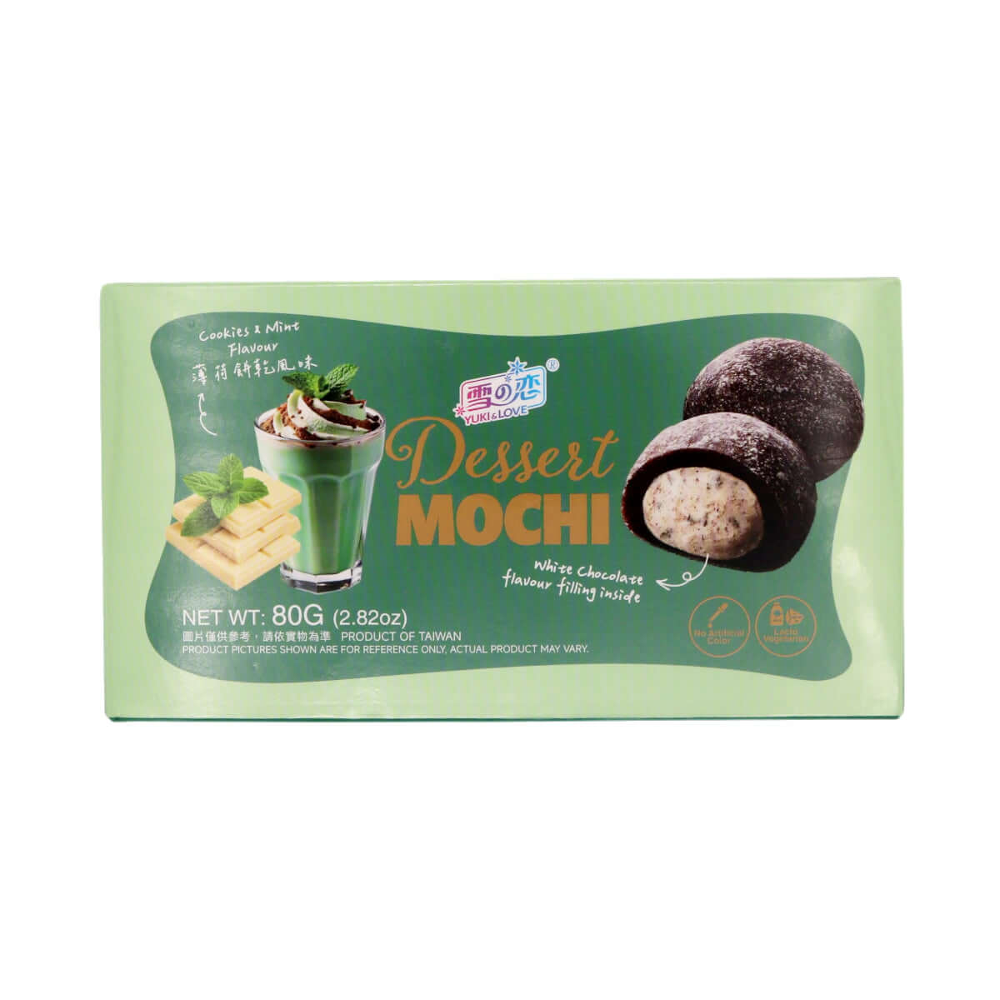
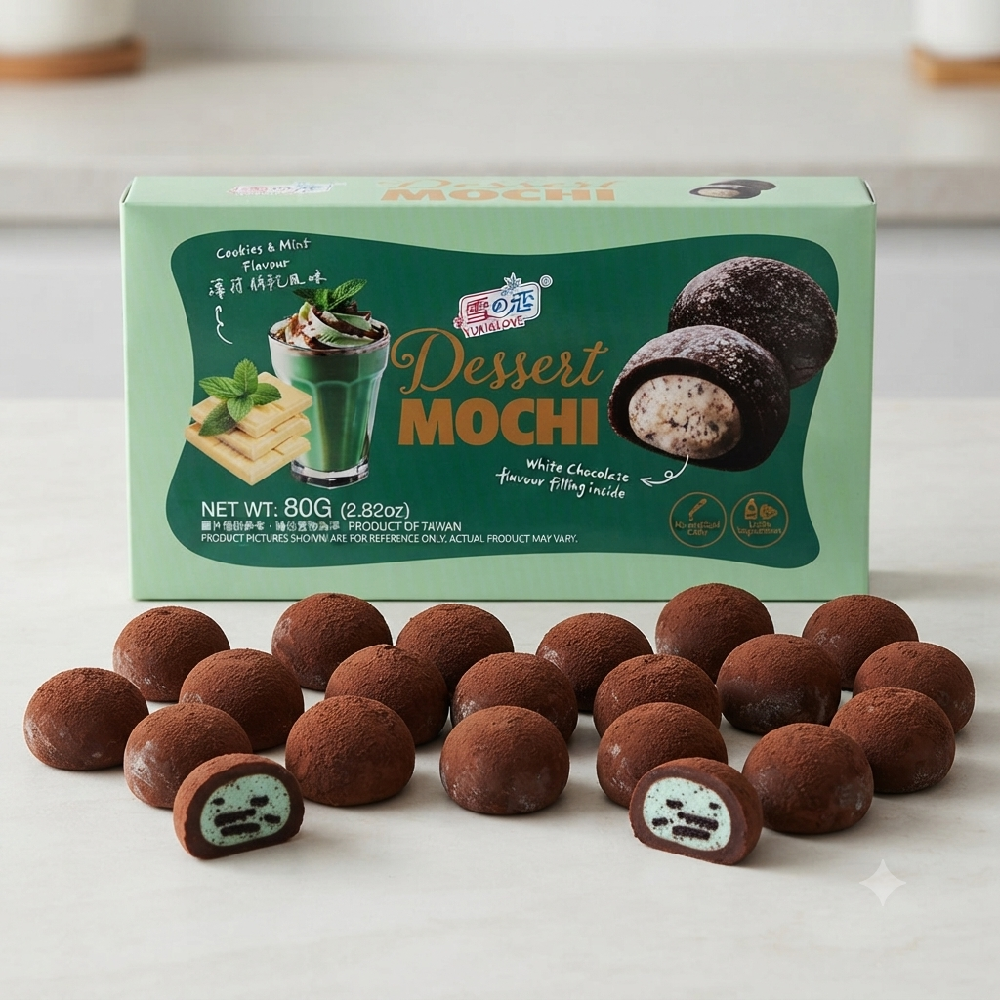

<div> <table style="border-collapse: collapse; width: 99.9809%;" border="1"><colgroup><col style="width: 49.9522%;"><col style="width: 49.9522%;"></colgroup> <tbody> <tr> <td> <div><span style="font-size: 14pt; color: #000000;"><strong>Yuki &amp; Love Cookies &amp; Mint Mochi, Yuki &amp; Love mochi cu biscuiti si menta</strong></span></div> <div><span style="font-size: 14pt; color: #000000;"><strong>80g</strong></span></div> <div><span style="font-size: 14pt; color: #000000;">Descopera Dessert Mochi Cookies and Mint de la Yuki &amp; Love, un desert rafinat inspirat din traditia asiatica. Aceasta delicatesa imbina un aluat moale de orez cu o umplutura cremoasa de ciocolata alba, menta si bucatele crocante de biscuiti, oferind un contrast unic si savuros.</span></div> </td> <td></td> </tr> <tr> <td></td> <td><span style="font-size: 14pt; color: #000000;">Rasfata-ti simturile cu mochi-ul Yuki &amp; Love cu aroma de biscuiti si menta. Textura elastica specifica desertului se imbina perfect cu prospetimea mentei si cremozitatea ciocolatei albe. Este gustarea asiatica ideala pentru momentele de rasfat, aducand o explozie de savoare si originalitate in fiecare zi.</span></td> </tr> </tbody> </table> </div>